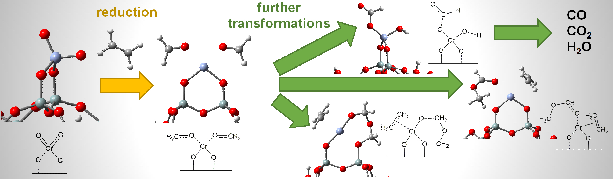
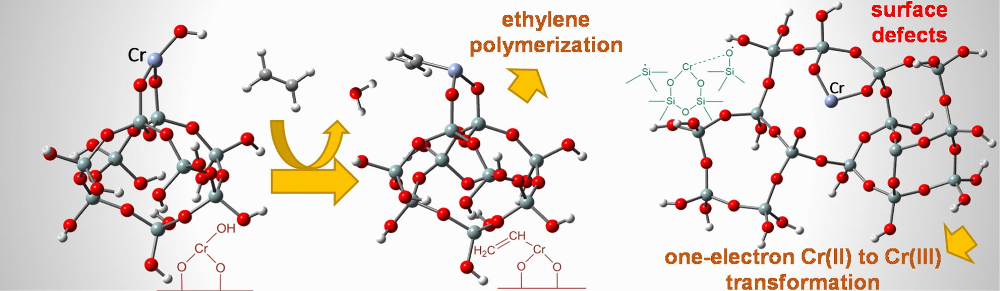
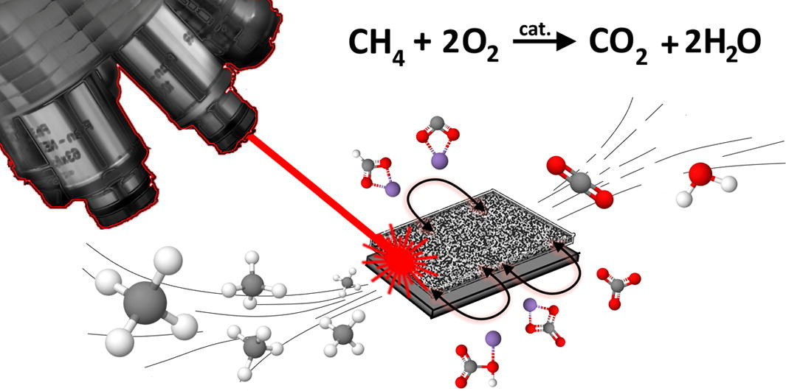
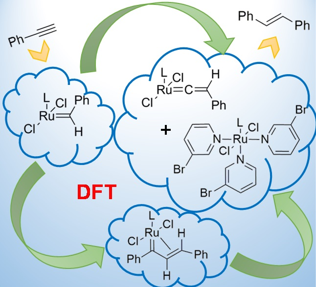
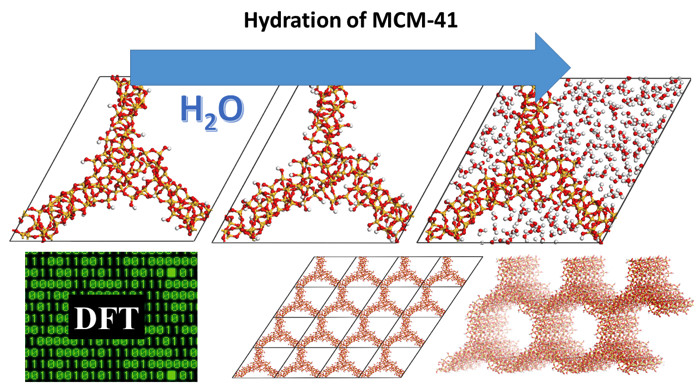
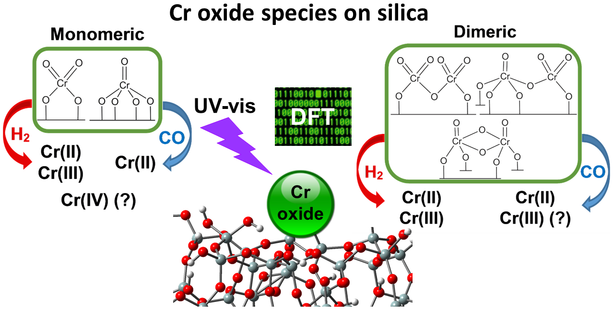
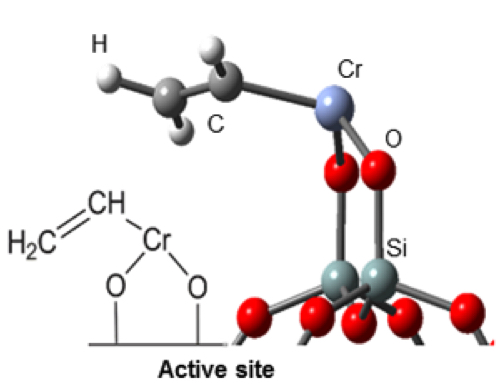

List of papers
2018
#9
M. Gierada, J. Handzlik✉,
Computational Insights into Reduction of the Phillips CrOx/SiO2 Catalyst by Ethylene and CO,
J. Catal. 359 (2018) 261-271,
https://doi.org/10.1016/j.jcat.2018.01.014 (IF = 6.844)
2017
#8
M. Gierada, J. Handzlik✉,
Active Sites Formation and their Transformations During Ethylene Polymerization by the Phillips CrOx/SiO2 Catalyst,
J. Catal. 352 (2017) 314-328,
http://dx.doi.org/10.1016/j.jcat.2017.05.025 (IF = 7.354)
#7
P.J. Jodłowski✉, R.J. Jędrzejczyk, D.K. Chlebda, M. Gierada, J. Łojewska,
In situ Spectroscopic Studies of Methane Catalytic Combustion over Co, Ce, and Pd Mixed Oxides Deposited on a Steel Surface,
J. Catal. 350 (2017) 1-12,
http://dx.doi.org/10.1016/j.jcat.2017.03.022 (IF = 7.354)
#6
M. Gierada✉, I. Czeluśniak, J. Handzlik✉,
Terminal-Alkyne-Induced Decomposition of a Phosphine-Free Ruthenium Alkylidene Catalyst,
ChemCatChem 9 (2017) 2284-2291
http://dx.doi.org/10.1002/cctc.201601647 (IF = 4.803)
2016
#5
M. Gierada✉,I. Petit, J. Handzlik, F. Tielens✉,
Hydration in Silica Based Mesoporous Materials: a DFT Model,
Phys. Chem. Chem. Phys.18 (2016) 32962-32972,
http://dx.doi.org/10.1039/c6cp05460a (IF = 4.449)
#4
M. Gierada, P. Michorczyk✉, F. Tielens, J. Handzlik✉, Reduction of Chromia-Silica Catalyst: A Molecular Picture,
J. Catal. 340 (2016) 122-135,
http://dx.doi.org/10.1016/j.jcat.2016.04.022 (IF = 7.354)
#3
A. Chakrabarti, M. Gierada, J. Handzlik, I. E. Wachs✉,
Operando Molecular Spectroscopy during Ethylene Polymerization by Supported CrOx/SiO2 Catalysts: Active Sites, Reaction Intermediates, and Structure-Activity Relationship
Top. Catal. 59 (2016) 725-739
http://dx.doi.org/10.1007/s11244-016-0546-6 (IF = 2.355)
2015
#2
M. Gierada✉, J. Handzlik,Zastosowanie oraz Struktura Form Powierzchniowych Układów Katalitycznych Cr/SiO2,
Przem. Chem.94(6) (2015) 900-905
http://dx.doi.org/10.15199/62.2015.6.8 (IF = 0.399)
#1

I. Czeluśniak✉, J. Handzlik, M. Gierada, T. Szymańska-Buzar,
Catalytic Transformation of Phenylacetylene Mediated by Phosphine-Free Ruthenium Alkylidene Complexes,
J. Organom. Chem. 786 (2015) 31-39
http://dx.doi.org/10.1016/j.jorganchem.2015.03.025 (IF = 2.173)